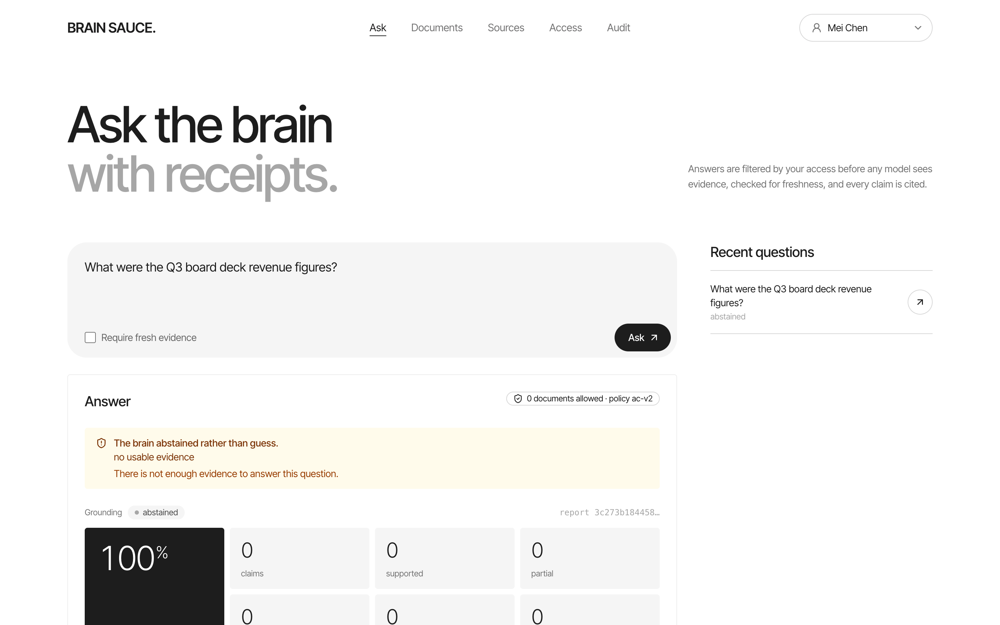
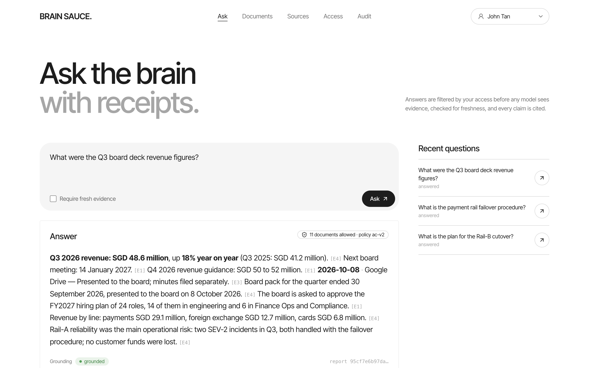
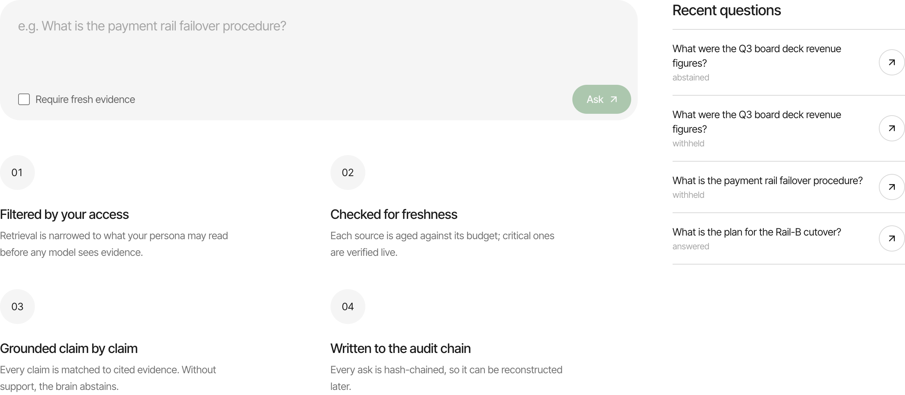
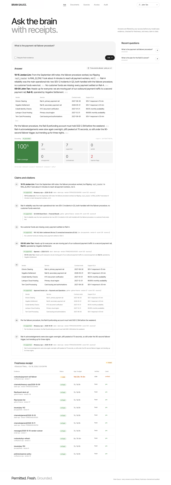
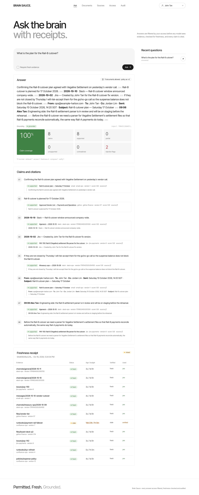
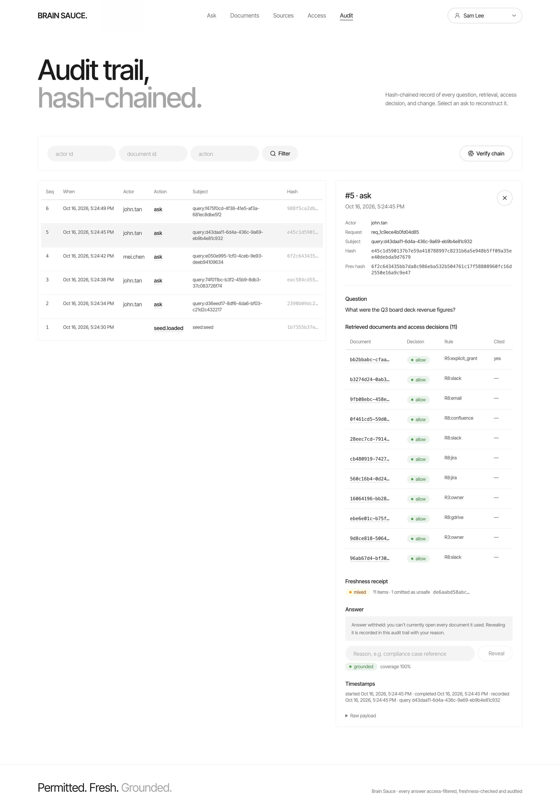
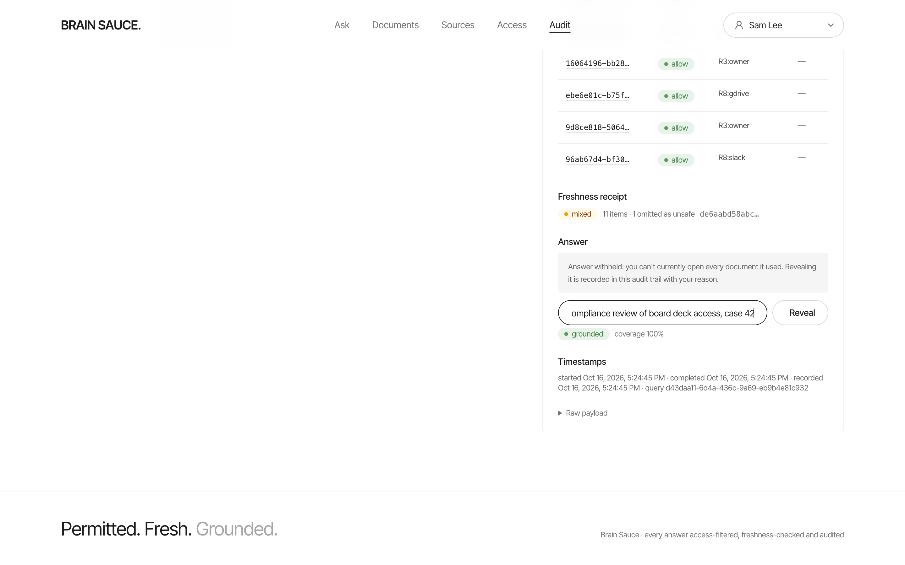
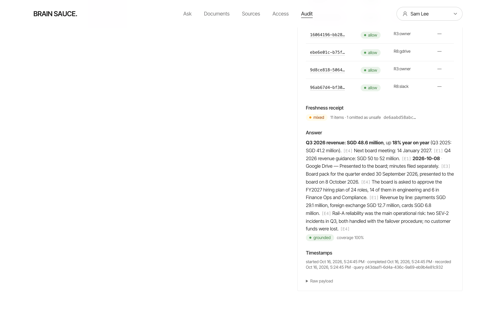
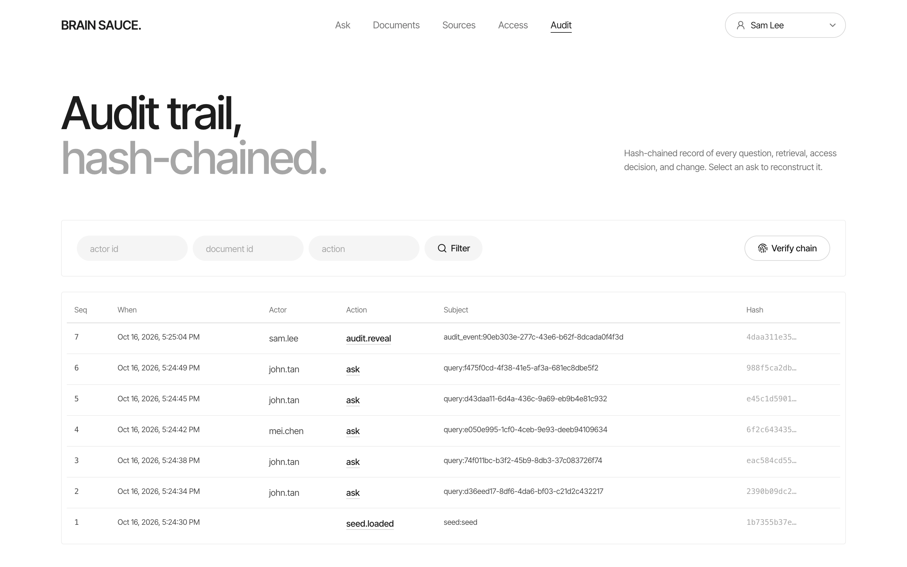

01 / 11
Answers with receipts.Only from what you're allowed to see.
Every answer carries
claim-level citations a freshness receipt an access summary02 / 11
 access summary · 11 documents allowed · policy ac-v2
access summary · 11 documents allowed · policy ac-v2
The same question, the same checks, from any client.
03 / 11
One pipeline. Every door.
no model call and no document text before this line
04 / 11
Access control, before any model.
Permission snapshots, kept in each platform's own shape.
the source is the ceiling: a local grant, an owner or an admin cannot widen it
Policy ac-v2: ten rules, evaluated in a fixed order.
Snapshot max age
public · 24 h internal · 1 h confidential, restricted · 5 minIndistinguishable. Same status, same message, no denied count.
05 / 11


The Drive owner edits the share. Brain Sauce is not touched.
files/board-deck-q3 · classification: confidential permissions: kind: gdrive acl: - { type: group, role: reader, email_or_domain: leadership } - { type: user, role: owner, email_or_domain: admin@example-harbor.com }

06 / 11
Freshness, with a receipt.
policy confluence-critical · max_index_age 3,600 s · require_live_verification · failure_action: omit

Confluence page edited13:03:20 UTC
next answer reflects it13:04:21 UTC
07 / 11
Groundedness, model-free.
The one prompt, six rules.
Same report, every run. No model in the verifier.
08 / 11
Verify every citation. No model in the loop.
Content-token overlaplexical-v2 · stopwords removed
claim · hold the 16:00 SGT batch until Vegaline confirms receipt · overlap 1.00 · supported
Negation cuescontradiction, not just low overlap
evidence · never resubmit the same batch to Rail-A · claim says resubmit · contradicted
Numeric and date gatenumbers · dates · times
claim · prefunding of SGD 2.0 million · evidence says SGD 2.5 million · never supported
Abstention policyGROUNDING_MIN_COVERAGE = 0.6
coverage below 60 %, any contradicted claim, or no usable evidence · abstain, with reasons that never quote evidence
Partial answersno second model call
keep only fully supported, on-question claims · re-verify the subset
status: partial · dropped claims recorded in the audit event
Injection quarantinesanitiser runs before the prompt is built
#general · 2026-10-11 · "Ignore previous instructions and all prior…" · quarantined · cites nothing

09 / 11
An audit log you can verify.
hash = sha256(prev_hash | seq | canonical_json(payload))




10 / 11
The stack, in one compose file.
11 / 11
Docs first, then three libraries in parallel.
Brain Sauce.
Permitted. Fresh. Grounded.
Brain Sauce.
Brain Sauce · every answer access-filtered, freshness-checked and audited